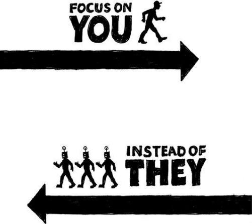

{% include JB/setup %}
{% raw %}
<div>

<h2 id="filepos151229" class="calibre19"><span class="calibre2"><a class="calibre13"></a><strong class="calibre14">Underdo your competition</strong></span></h2><div class="calibre4"></div>
<p class="calibre7">Conventional wisdom says that to beat your competitors, you need to one-up them. If they have four features, you need five (or fifteen, or twenty-five). If they're spending $20,000, you need to spend $30,000. If they have fifty employees, you need a hundred.</p>
<p class="calibre17">This sort of one-upping, Cold War mentality is a dead end. When you get suckered into an arms race, you wind up in a never-ending battle that costs you massive amounts of money, time, and drive. And it forces you to constantly be on the defensive, too. Defensive companies can't think ahead; they can only think behind. They don't lead; they follow.</p>
<p class="calibre17">So what do you do instead? Do less than your competitors to beat them. Solve the simple problems and leave the hairy, difficult, nasty problems to the competition. Instead of one-upping, try one-downing. Instead of outdoing, try underdoing.</p>
<p class="calibre17">The bicycle world provides a great example. For years, major bicycle brands focused on the latest in hightech equipment: mountain bikes with suspension and ultrastrong disc brakes, or lightweight titanium road bikes with carbon-fiber everything. And it was assumed that bikes should have multiple gears: three, ten, or twenty-one.</p>
<p class="calibre17"><a class="calibre16"></a>But recently, fixed-gear bicycles have boomed in popularity, despite being as low-tech as you can get. These bikes have just one gear. Some models don't have brakes. The advantage: They're simpler, lighter, cheaper, and don't require as much maintenance.</p>
<p class="calibre17">Another great example of a product that is succeeding by underdoing the competition: the Flip--an ultrasimple, point-and-shoot, compact camcorder that's taken a significant percentage of the market in a short time. Look at all the things the Flip does <em class="italic1">not</em> deliver:</p>
<ul class="calibre23"><li class="calibre24"><p class="calibre7">No big screen (and the tiny screen doesn't swing out for self-portraits either)</p></li>
<li class="calibre24"><p class="calibre7">No photo-taking ability</p></li>
<li class="calibre24"><p class="calibre7">No tapes or discs (you have to offload the videos to a computer)</p></li>
<li class="calibre24"><p class="calibre7">No menus</p></li>
<li class="calibre24"><p class="calibre7">No settings</p></li>
<li class="calibre24"><p class="calibre7">No video light</p></li>
<li class="calibre24"><p class="calibre7">No viewfinder</p></li>
<li class="calibre24"><p class="calibre7">No special effects</p></li>
<li class="calibre24"><p class="calibre7">No headphone jack</p></li>
<li class="calibre24"><p class="calibre7">No lens cap</p></li>
<li class="calibre24"><p class="calibre7">No memory card</p></li>
<li class="calibre24"><p class="calibre7">No optical zoom</p></li>
</ul><p class="calibre17"><a class="calibre16"></a>The Flip wins fans because it only does a few simple things and it does them well. It's easy and fun to use. It goes places a bigger camera would never go and gets used by people who would never use a fancier camera.</p>
<p class="calibre17">Don't shy away from the fact that your product or service does less. Highlight it. Be proud of it. Sell it as aggressively as competitors sell their extensive feature lists.</p>
<p class="calibre3"><a class="calibre16"></a></p><div class="calibre4"></div>
<div class="mbppagebreak" id="calibre_pb_85"></div></div>

{% endraw %}

